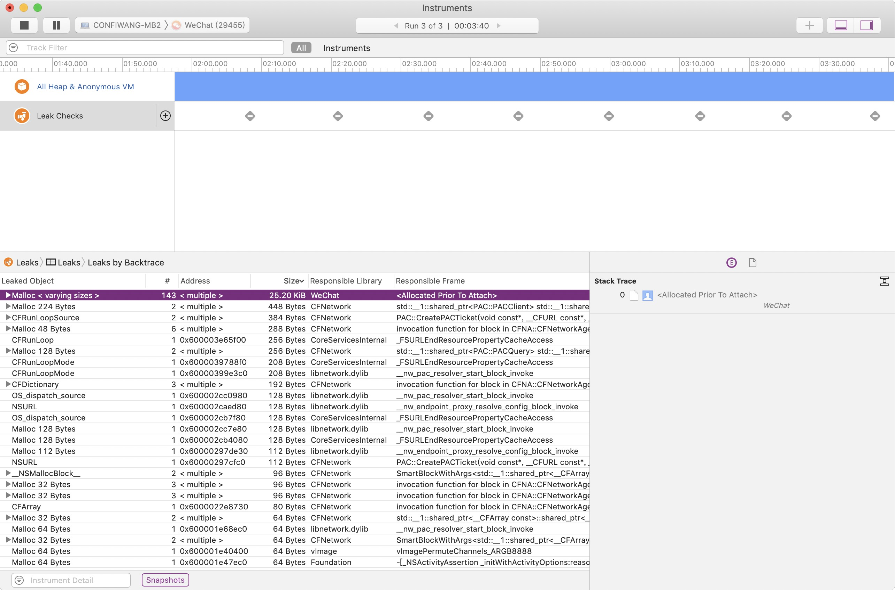
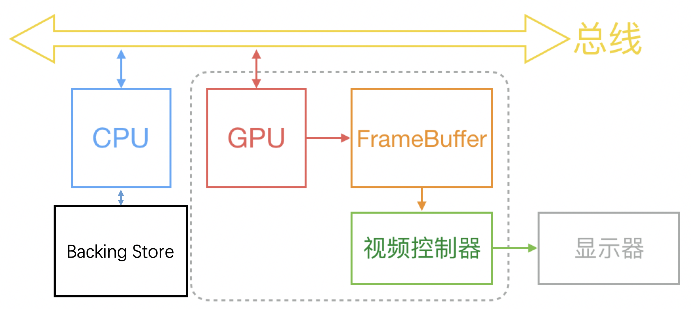
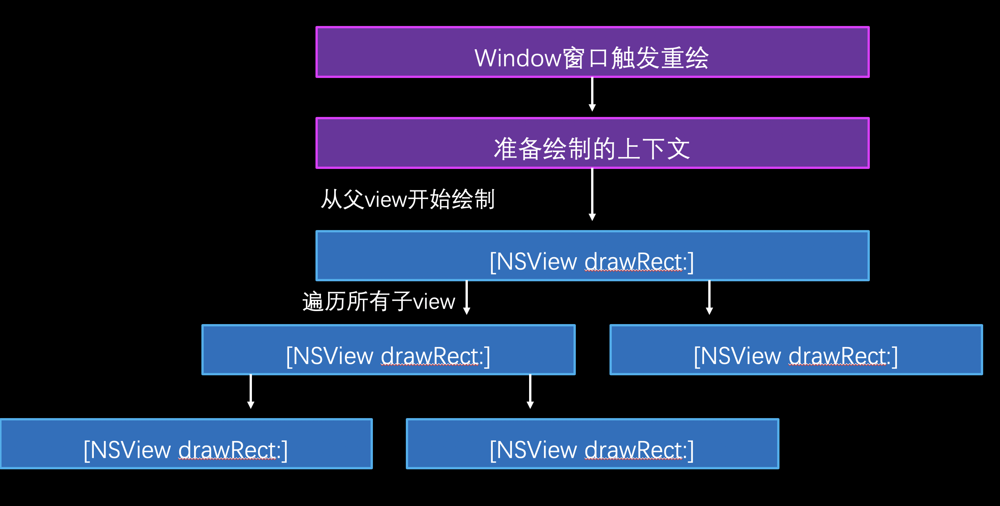
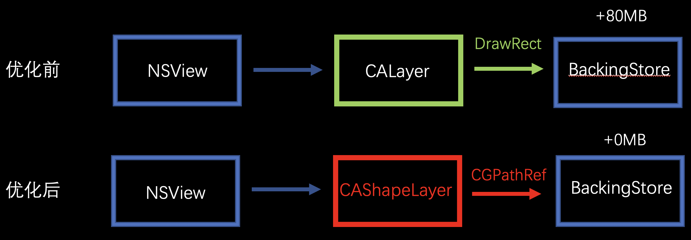
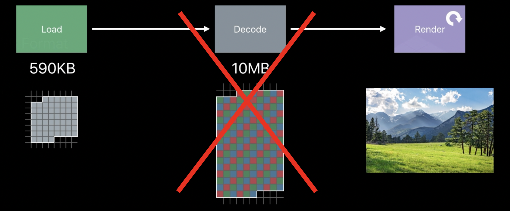

<!DOCTYPE html>


  


<html class="theme-next pisces use-motion" lang="zh-Hans">
<head><meta name="generator" content="Hexo 3.9.0">
  <meta charset="UTF-8">
<meta http-equiv="X-UA-Compatible" content="IE=edge">
<meta name="viewport" content="width=device-width, initial-scale=1, maximum-scale=1">
<meta name="theme-color" content="#222">


<meta http-equiv="Cache-Control" content="no-transform">
<meta http-equiv="Cache-Control" content="no-siteapp">


  
  
  <link href="/lib/fancybox/source/jquery.fancybox.css?v=2.1.5" rel="stylesheet" type="text/css">


<link href="/lib/font-awesome/css/font-awesome.min.css?v=4.6.2" rel="stylesheet" type="text/css">

<link href="/css/main.css?v=5.1.4" rel="stylesheet" type="text/css">


  <link rel="apple-touch-icon" sizes="180x180" href="/images/apple-touch-icon-next.png?v=5.1.4">


  <link rel="icon" type="image/png" sizes="32x32" href="/images/favicon-32x32-next.png?v=5.1.4">


  <link rel="icon" type="image/png" sizes="16x16" href="/images/favicon-16x16-next.png?v=5.1.4">


  <link rel="mask-icon" href="/images/logo.svg?v=5.1.4" color="#222">


  <meta name="keywords" content="macOS,">


<meta name="description" content="概述 我们为什么减少内存占用？  为了更好的用户体验      内存是有限且系统共享的资源，一个程序占用更多，系统和其他程序所能用的就更少。程序启动前都需要先加载到内存中，并且在程序运行过程中的数据操作也需要占用一定的内存资源。减少内存占用也能同时减少其对 CPU 时间维度上的消耗，从而使不仅你所开发的 App，其他 App 以及整个系统也都能表现的更好。  可以减少的内存占用有哪些？  从苹果的">
<meta name="keywords" content="macOS">
<meta property="og:type" content="article">
<meta property="og:title" content="macOS APP内存优化">
<meta property="og:url" content="http://confiwang.github.io/2019/08/29/macOS-APP内存优化/index.html">
<meta property="og:site_name" content="夜星辰 - 王陈云的博客">
<meta property="og:description" content="概述 我们为什么减少内存占用？  为了更好的用户体验      内存是有限且系统共享的资源，一个程序占用更多，系统和其他程序所能用的就更少。程序启动前都需要先加载到内存中，并且在程序运行过程中的数据操作也需要占用一定的内存资源。减少内存占用也能同时减少其对 CPU 时间维度上的消耗，从而使不仅你所开发的 App，其他 App 以及整个系统也都能表现的更好。  可以减少的内存占用有哪些？  从苹果的">
<meta property="og:locale" content="zh-Hans">
<meta property="og:image" content="http://confiwang.github.io/2019/08/29/macOS-APP内存优化/Instruments-Leaks-Test.jpg">
<meta property="og:image" content="http://confiwang.github.io/2019/08/29/macOS-APP内存优化/methodology.jpg">
<meta property="og:image" content="http://confiwang.github.io/2019/08/29/macOS-APP内存优化/backing-store.png">
<meta property="og:image" content="http://confiwang.github.io/2019/08/29/macOS-APP内存优化/drawrect.png">
<meta property="og:image" content="http://confiwang.github.io/2019/08/29/macOS-APP内存优化/CAShapeLayer.png">
<meta property="og:image" content="http://confiwang.github.io/2019/08/29/macOS-APP内存优化/image-io.png">
<meta property="og:updated_time" content="2019-09-01T09:14:24.150Z">
<meta name="twitter:card" content="summary">
<meta name="twitter:title" content="macOS APP内存优化">
<meta name="twitter:description" content="概述 我们为什么减少内存占用？  为了更好的用户体验      内存是有限且系统共享的资源，一个程序占用更多，系统和其他程序所能用的就更少。程序启动前都需要先加载到内存中，并且在程序运行过程中的数据操作也需要占用一定的内存资源。减少内存占用也能同时减少其对 CPU 时间维度上的消耗，从而使不仅你所开发的 App，其他 App 以及整个系统也都能表现的更好。  可以减少的内存占用有哪些？  从苹果的">
<meta name="twitter:image" content="http://confiwang.github.io/2019/08/29/macOS-APP内存优化/Instruments-Leaks-Test.jpg">


<script type="text/javascript" id="hexo.configurations">
  var NexT = window.NexT || {};
  var CONFIG = {
    root: '/',
    scheme: 'Pisces',
    version: '5.1.4',
    sidebar: {"position":"left","display":"post","offset":12,"b2t":false,"scrollpercent":false,"onmobile":false},
    fancybox: true,
    tabs: true,
    motion: {"enable":true,"async":false,"transition":{"post_block":"fadeIn","post_header":"slideDownIn","post_body":"slideDownIn","coll_header":"slideLeftIn","sidebar":"slideUpIn"}},
    duoshuo: {
      userId: '0',
      author: '博主'
    },
    algolia: {
      applicationID: '',
      apiKey: '',
      indexName: '',
      hits: {"per_page":10},
      labels: {"input_placeholder":"Search for Posts","hits_empty":"We didn't find any results for the search: ${query}","hits_stats":"${hits} results found in ${time} ms"}
    }
  };
</script>


  <link rel="canonical" href="http://confiwang.github.io/2019/08/29/macOS-APP内存优化/">


  <title>macOS APP内存优化 | 夜星辰 - 王陈云的博客</title>
  


</head>

<body itemscope itemtype="http://schema.org/WebPage" lang="zh-Hans">

  
  
    
  

  <div class="container sidebar-position-left page-post-detail">
    <div class="headband"></div>

    <header id="header" class="header" itemscope itemtype="http://schema.org/WPHeader">
      <div class="header-inner"><div class="site-brand-wrapper">
  <div class="site-meta ">
    

    <div class="custom-logo-site-title">
      <a href="/" class="brand" rel="start">
        <span class="logo-line-before"><i></i></span>
        <span class="site-title">夜星辰 - 王陈云的博客</span>
        <span class="logo-line-after"><i></i></span>
      </a>
    </div>
      
        <p class="site-subtitle"></p>
      
  </div>

  <div class="site-nav-toggle">
    <button>
      <span class="btn-bar"></span>
      <span class="btn-bar"></span>
      <span class="btn-bar"></span>
    </button>
  </div>
</div>

<nav class="site-nav">
  

  
    <ul id="menu" class="menu">
      
        
        <li class="menu-item menu-item-home">
          <a href="/" rel="section">
            
              <i class="menu-item-icon fa fa-fw fa-home"></i> <br>
            
            首页
          </a>
        </li>
      
        
        <li class="menu-item menu-item-tags">
          <a href="/tags/" rel="section">
            
              <i class="menu-item-icon fa fa-fw fa-tags"></i> <br>
            
            标签
          </a>
        </li>
      
        
        <li class="menu-item menu-item-categories">
          <a href="/categories/" rel="section">
            
              <i class="menu-item-icon fa fa-fw fa-th"></i> <br>
            
            分类
          </a>
        </li>
      
        
        <li class="menu-item menu-item-archives">
          <a href="/archives/" rel="section">
            
              <i class="menu-item-icon fa fa-fw fa-archive"></i> <br>
            
            归档
          </a>
        </li>
      

      
    </ul>
  

  
</nav>


 </div>
    </header>

    <main id="main" class="main">
      <div class="main-inner">
        <div class="content-wrap">
          <div id="content" class="content">
            

  <div id="posts" class="posts-expand">
    

  

  
  
  

  <article class="post post-type-normal" itemscope itemtype="http://schema.org/Article">
  
  
  
  <div class="post-block">
    <link itemprop="mainEntityOfPage" href="http://confiwang.github.io/2019/08/29/macOS-APP内存优化/">

    <span hidden itemprop="author" itemscope itemtype="http://schema.org/Person">
      <meta itemprop="name" content="Confiwang">
      <meta itemprop="description" content>
      <meta itemprop="image" content="/images/rooster.png">
    </span>

    <span hidden itemprop="publisher" itemscope itemtype="http://schema.org/Organization">
      <meta itemprop="name" content="夜星辰 - 王陈云的博客">
    </span>

    
      <header class="post-header">

        
        
          <h1 class="post-title" itemprop="name headline">macOS APP内存优化</h1>
        

        <div class="post-meta">
          <span class="post-time">
            
              <span class="post-meta-item-icon">
                <i class="fa fa-calendar-o"></i>
              </span>
              
                <span class="post-meta-item-text">发表于</span>
              
              <time title="创建于" itemprop="dateCreated datePublished" datetime="2019-08-29T13:35:06+08:00">
                2019-08-29
              </time>
            

            

            
          </span>

          
            <span class="post-category">
            
              <span class="post-meta-divider">|</span>
            
              <span class="post-meta-item-icon">
                <i class="fa fa-folder-o"></i>
              </span>
              
                <span class="post-meta-item-text">分类于</span>
              
              
                <span itemprop="about" itemscope itemtype="http://schema.org/Thing">
                  <a href="/categories/性能优化/" itemprop="url" rel="index">
                    <span itemprop="name">性能优化</span>
                  </a>
                </span>

                
                
              
            </span>
          

          
            
          

          
          
             <span id="/2019/08/29/macOS-APP内存优化/" class="leancloud_visitors" data-flag-title="macOS APP内存优化">
               <span class="post-meta-divider">|</span>
               <span class="post-meta-item-icon">
                 <i class="fa fa-eye"></i>
               </span>
               
                 <span class="post-meta-item-text">阅读次数&#58;</span>
               
                 <span class="leancloud-visitors-count"></span>
             </span>
          

          

          

          

        </div>
      </header>
    

    
    
    
    <div class="post-body" itemprop="articleBody">

      
      

      
        <h2 id="概述"><a href="#概述" class="headerlink" title="概述"></a>概述</h2><ol>
<li><p>我们为什么减少内存占用？</p>
<blockquote>
<p>为了更好的用户体验   </p>
</blockquote>
<p> 内存是有限且系统共享的资源，一个程序占用更多，系统和其他程序所能用的就更少。程序启动前都需要先加载到内存中，并且在程序运行过程中的数据操作也需要占用一定的内存资源。减少内存占用也能同时减少其对 CPU 时间维度上的消耗，从而使不仅你所开发的 App，其他 App 以及整个系统也都能表现的更好。</p>
</li>
<li><p>可以减少的内存占用有哪些？</p>
<blockquote>
<p>从苹果的开发者文档里可以看到，一个 app 的内存分三类：</p>
<ul>
<li>Leaked memory: Memory unreferenced by your application that cannot be used again or freed (also detectable by using the Leaks instrument).</li>
<li>Abandoned memory: Memory still referenced by your application that has no useful purpose.</li>
<li>Cached memory: Memory still referenced by your application that might be used again for better performance.  </li>
</ul>
</blockquote>
<p> 之前在做后台开发的时候解决最多的问题就是Leaked memory，但是在客户端开发的时候会发现，Abandoned memory跟Cached memory渐渐地成为了内存消耗的主力</p>
</li>
<li><p>如何选取内存占用指标？</p>
<blockquote>
<ul>
<li>系统APP 活动监视器-内存  </li>
<li>terminal 使用footprint命令  </li>
<li>objective-c 使用task_vm_info_data_t中的phys_footprint  </li>
</ul>
</blockquote>
<p> 以上三种方式能得到相似的结果，也是WWDC2013 704 Building Efficient OS X Apps推荐的内存占用获取方式，附上最后一种方式的代码</p>
 <figure class="highlight c"><table><tr><td class="gutter"><pre><span class="line">1</span><br><span class="line">2</span><br><span class="line">3</span><br><span class="line">4</span><br><span class="line">5</span><br></pre></td><td class="code"><pre><span class="line"><span class="keyword">task_vm_info_data_t</span> task_infos = &#123;<span class="number">0</span>&#125;;</span><br><span class="line">info_count = TASK_VM_INFO_COUNT;</span><br><span class="line"><span class="keyword">if</span> (task_info(mach_task_self(), TASK_VM_INFO, (<span class="keyword">task_info_t</span>)&amp;task_infos, &amp;info_count) == KERN_SUCCESS) &#123;</span><br><span class="line">    memory_footprint = task_infos.phys_footprint;</span><br><span class="line">&#125;</span><br></pre></td></tr></table></figure>

</li>
</ol>
<h2 id="分析工具"><a href="#分析工具" class="headerlink" title="分析工具"></a>分析工具</h2><ol>
<li><p>静态代码扫描</p>
<ul>
<li>Xcode自带Analyze<br>   适合检查leaked memory，对malloc或者new方式分配的内存或者未定义的变量等检查效果较好</li>
</ul>
</li>
<li><p>MLeaksFinder</p>
<ul>
<li>适合检查如NSViewController被释放了了，但它的view没被释放，或者一个NSView被释放了了，但它的某个subview没被释放。对手机上频繁切换页面的APP优化效果明显。</li>
</ul>
</li>
<li><p>微信内存监控</p>
<blockquote>
<p>Matrix-iOS 当前工具监控范围包括：崩溃、卡顿和爆内存，包含以下两款插件：  </p>
<ul>
<li>WCCrashBlockMonitorPlugin： 基于 KSCrash 框架开发，具有业界领先的卡顿堆栈捕获能力，同时兼备崩溃捕获能力。  </li>
<li>WCMemoryStatPlugin： 一款性能优化到极致的爆内存监控工具，能够全面捕获应用爆内存时的内存分配以及调用堆栈情况。  </li>
</ul>
</blockquote>
<p> 内存这块主要使用WCMemoryStatPlugin，得到的内存分配文件相比较与Instruments有部分数据缺失，需要自己编写脚本符号化得到的内存分配文件，适合监控线上的内存情况，可以发现一些偶现的内存问题</p>
</li>
<li><p>Instruments leaks<br> </p>
<ul>
<li>可以看到单纯的内存泄露并不多，看来大都属于在运行过程中不断的申请内存，但是在很长一段时间内没有释放，或者是直到程序退出时，才释放申请的内存。</li>
</ul>
</li>
<li><p>Instruments Allocations</p>
<ul>
<li>可以看到自应用开始详细的内存分配，不过占用空间过大，不能持续运行。</li>
</ul>
</li>
<li><p>Memory Graph  </p>
<ul>
<li>它对比Instruments Allocations，开启后不会迅速产生大量日志文件，导致应用程序卡死。而且他提供丰富的命令，几乎涵盖了，Instruments中Allocations跟leaks的所有功能，并且使用命令对当前应用程序中分配的内存类型等进行简单的统计分析，快速的定位应用程序中分配最多的内存是什么，以及是如何分配的很方便。</li>
</ul>
</li>
</ol>
<h2 id="内存优化的方法论"><a href="#内存优化的方法论" class="headerlink" title="内存优化的方法论"></a>内存优化的方法论</h2><ol>
<li>在介绍了上述几种工具之后，我还希望可以借助一些工具，对内存占用进行一些分析操作，比如对分配的内存进行分类，排序，查看其分配堆栈，查看其被谁持有。<br>左图就是由此产生的内存问题分析方法，具体操作是打开APP，持续使用，期间可以随时导出Memory Graph文件，使用VMMap查看文件，对文件中的内存分配进行分类排序，取其中分配最大的一块内存的首地址使用Malloc_History跟Leaks进行分析，可以得到这块内存分配的详细堆栈以及当前是被谁引用，接下来就是对这块内存进行优化，通过不断的优化当前内存分配的大头，带来APP内存的巨大下降。<br>  </li>
</ol>
<h3 id="通过上述方法进行分析，发现APP中内存占用几个大类"><a href="#通过上述方法进行分析，发现APP中内存占用几个大类" class="headerlink" title="通过上述方法进行分析，发现APP中内存占用几个大类"></a>通过上述方法进行分析，发现APP中内存占用几个大类</h3><ol>
<li>界面的渲染</li>
<li>图片的压缩</li>
<li>各种缓存</li>
<li>bug</li>
</ol>
<h2 id="方案"><a href="#方案" class="headerlink" title="方案"></a>方案</h2><blockquote>
<h3 id="接下来我们逐个分析，介绍APP的内存占用"><a href="#接下来我们逐个分析，介绍APP的内存占用" class="headerlink" title="接下来我们逐个分析，介绍APP的内存占用"></a>接下来我们逐个分析，介绍APP的内存占用</h3></blockquote>
<h4 id="界面的渲染"><a href="#界面的渲染" class="headerlink" title="界面的渲染"></a>界面的渲染</h4><ol>
<li>view的定制通过重写drawrect消耗大量内存  </li>
</ol>
<ul>
<li>为何重写drawrect消耗大量内存<br>  当我们重写drawrect时，会促使Core Animation创建一个Open GL纹理，并将你使用CoreGraphics框架的绘图操作数据放到纹理的位图数据中。<br>  <br>  计算机系统中 CPU、GPU、显示器是以上面这种方式协同工作的。CPU 计算好显示内容提交到 GPU，GPU 渲染完成后将渲染结果放入帧缓冲区，随后视频控制器会按照 VSync 信号逐行读取帧缓冲区的数据，经过可能的数模转换传递给显示器显示。当我们重写drawrect时，CPU会创建backing-store进行渲染，随后拷贝到GPU的显存（VRAM）<br>  <br>  上图就是一个BackingStore的绘制过程，首先是window窗口触发重绘，准备重绘区域等大的一个基于bitmap的上下文，然后从父view开始，遍历所有的子view进行层层绘制，每一个绘制操作完成之后，才开始下一个绘制。<br>  观察drawRect方法，如发现是一些点线条，背景色等的绘制，我们就可以使用CAShapeLayer+CGPath的方式进行绘制，CAShapeLayer是苹果提供的一个对opengl es的一个封装，可以完全满足我们的需要。<br>  <br>  上图就是使用CAShapeLayer+CGPath的绘制方式替换之前通过Core Graphics的绘制方式的流程对比，一个CAShapeLayer 不需要像普通CALayer一样创建一个寄宿图形，所以无论有多大，都不会占用太多的内存。并且CAShapeLayer渲染快速，使用了硬件加速，绘制同一图形会比用Core Graphics快很多。</li>
</ul>
<ul>
<li>离屏渲染介绍<br>  首先创建屏幕外缓冲区，然后渲染到纹理中，最后将结果渲染到帧的缓冲区，其中涉及到两次昂贵的环境转换(转换环境到屏幕外缓冲区，然后转换环境到帧缓冲区)。可以直接将图层合成到帧的缓冲区中(在屏幕上);当帧缓冲区图片被复用的时候，可以提升性能。  <ul>
<li>帧缓冲区介绍<br>帧缓冲区(显存或者内存上一段空间)：是由像素组成的二维数组，每一个存储单元对应屏幕上的一个像素，整个帧缓冲对应一帧图像即当前屏幕画面。帧缓冲通常包括：颜色缓冲，深度缓冲，模板缓冲和累积缓冲。这些缓冲区可能是在一块内存区域，也可能单独分开，看硬件。  </li>
</ul>
</li>
<li>Core Animation介绍<br>  Core Animation的核心是OpenGL ES的一个抽象物，Core Animation的layer对应着OpenGL ES的texture，Core Animation可以有子layer，所以我们能看到他是一个图层树。在图像显示过程中，Core Animation的主要任务是判断出哪些图层需要被(重新)绘制，然后交由OpenGL ES将这些图层合并、显示到屏幕上。  </li>
</ul>
<h4 id="图片的压缩"><a href="#图片的压缩" class="headerlink" title="图片的压缩"></a>图片的压缩</h4><ol>
<li><p>减少图片压缩产生的内存占用峰值</p>
<ul>
<li><p>图片的压缩逻辑改造<br>使用ImageIO方式对图片进行压缩，无需解码bitmap<br><br>下面附上实现代码  </p>
<figure class="highlight c"><table><tr><td class="gutter"><pre><span class="line">1</span><br><span class="line">2</span><br><span class="line">3</span><br><span class="line">4</span><br><span class="line">5</span><br><span class="line">6</span><br><span class="line">7</span><br><span class="line">8</span><br></pre></td><td class="code"><pre><span class="line">NSMutableDictionary* options = [NSMutableDictionary dictionary];</span><br><span class="line"></span><br><span class="line">[options safeSetObject:(__bridge id)kCFBooleanTrue forKey:(__bridge id)kCGImageSourceCreateThumbnailFromImageAlways];</span><br><span class="line">[options safeSetObject:(__bridge id)kCFBooleanTrue forKey:(__bridge id)kCGImageSourceCreateThumbnailWithTransform];</span><br><span class="line">[options safeSetObject:(__bridge id)kCFBooleanFalse forKey:(__bridge id)kCGImageSourceShouldCache];</span><br><span class="line">[options safeSetObject:[NSNumber numberWithFloat:maxPixelSize] forKey:(__bridge id)kCGImageSourceThumbnailMaxPixelSize];</span><br><span class="line"></span><br><span class="line">CGImageSourceRef sourceRef = CGImageSourceCreateWithData((__bridge CFDataRef)imageData, <span class="literal">NULL</span>);</span><br></pre></td></tr></table></figure>

</li>
</ul>
</li>
</ol>
<h4 id="各种缓存"><a href="#各种缓存" class="headerlink" title="各种缓存"></a>各种缓存</h4><ol>
<li>减少APP内缓存  <ul>
<li>减少单个缓存的大小  </li>
<li>减少缓存时间，及时释放  </li>
<li>减少缓存数量  </li>
</ul>
</li>
</ol>
<h4 id="bug"><a href="#bug" class="headerlink" title="bug"></a>bug</h4><ol>
<li>bug修复  </li>
</ol>
<p>推荐阅读：</p>
<ul>
<li><a href="https://developer.apple.com/videos/play/wwdc2018/416/" target="_blank" rel="noopener">WWDC-iOS Memory Deep Dive</a></li>
<li><a href="https://developer.apple.com/videos/play/wwdc2012/506/" target="_blank" rel="noopener">WWDC-Optimizing 2D Graphics and Animation Performance</a></li>
<li><a href="https://objccn.io/issue-3-1/" target="_blank" rel="noopener">绘制像素到屏幕上</a></li>
<li><a href="https://wereadteam.github.io/2016/02/22/MLeaksFinder/" target="_blank" rel="noopener">微信读书博客</a></li>
<li><a href="https://github.com/Tencent/matrix#matrix_ios_cn" target="_blank" rel="noopener">微信内存监控开源项目-Matrix</a></li>
</ul>

      
    </div>
    
    
    

    

    

    

    <footer class="post-footer">
      
        <div class="post-tags">
          
            <a href="/tags/macOS/" rel="tag"># macOS</a>
          
        </div>
      

      
      
      

      
        <div class="post-nav">
          <div class="post-nav-next post-nav-item">
            
              <a href="/2019/08/29/hello-world/" rel="next" title="Hello World">
                <i class="fa fa-chevron-left"></i> Hello World
              </a>
            
          </div>

          <span class="post-nav-divider"></span>

          <div class="post-nav-prev post-nav-item">
            
              <a href="/2019/09/13/Objective-C深拷贝&浅拷贝/" rel="prev" title="Objective-C深拷贝&浅拷贝">
                Objective-C深拷贝&浅拷贝 <i class="fa fa-chevron-right"></i>
              </a>
            
          </div>
        </div>
      

      
      
    </footer>
  </div>
  
  
  
  </article>


    <div class="post-spread">
      
    </div>
  </div>


          </div>
          


          

  
    <div id="gitalk-container"></div>

  


        </div>
        
          
  
  <div class="sidebar-toggle">
    <div class="sidebar-toggle-line-wrap">
      <span class="sidebar-toggle-line sidebar-toggle-line-first"></span>
      <span class="sidebar-toggle-line sidebar-toggle-line-middle"></span>
      <span class="sidebar-toggle-line sidebar-toggle-line-last"></span>
    </div>
  </div>

  <aside id="sidebar" class="sidebar">
    
    <div class="sidebar-inner">

      

      
        <ul class="sidebar-nav motion-element">
          <li class="sidebar-nav-toc sidebar-nav-active" data-target="post-toc-wrap">
            文章目录
          </li>
          <li class="sidebar-nav-overview" data-target="site-overview-wrap">
            站点概览
          </li>
        </ul>
      

      <section class="site-overview-wrap sidebar-panel">
        <div class="site-overview">
          <div class="site-author motion-element" itemprop="author" itemscope itemtype="http://schema.org/Person">
            
              
            
              <p class="site-author-name" itemprop="name">Confiwang</p>
              <p class="site-description motion-element" itemprop="description">不积跬步，无以至千里；不积小流，无以成江海。</p>
          </div>

          <nav class="site-state motion-element">

            
              <div class="site-state-item site-state-posts">
              
                <a href="/archives/">
              
                  <span class="site-state-item-count">6</span>
                  <span class="site-state-item-name">日志</span>
                </a>
              </div>
            

            
              
              
              <div class="site-state-item site-state-categories">
                <a href="/categories/index.html">
                  <span class="site-state-item-count">4</span>
                  <span class="site-state-item-name">分类</span>
                </a>
              </div>
            

            
              
              
              <div class="site-state-item site-state-tags">
                <a href="/tags/index.html">
                  <span class="site-state-item-count">5</span>
                  <span class="site-state-item-name">标签</span>
                </a>
              </div>
            

          </nav>

          

          
            <div class="links-of-author motion-element">
                
                  <span class="links-of-author-item">
                    <a href="mailto:confiwang@qq.com" target="_blank" title="E-Mail">
                      
                        <i class="fa fa-fw fa-envelope"></i>E-Mail</a>
                  </span>
                
            </div>
          

          
          

          
          

          

        </div>
      </section>

      
      <!--noindex-->
        <section class="post-toc-wrap motion-element sidebar-panel sidebar-panel-active">
          <div class="post-toc">

            
              
            

            
              <div class="post-toc-content"><ol class="nav"><li class="nav-item nav-level-2"><a class="nav-link" href="#概述"><span class="nav-number">1.</span> <span class="nav-text">概述</span></a></li><li class="nav-item nav-level-2"><a class="nav-link" href="#分析工具"><span class="nav-number">2.</span> <span class="nav-text">分析工具</span></a></li><li class="nav-item nav-level-2"><a class="nav-link" href="#内存优化的方法论"><span class="nav-number">3.</span> <span class="nav-text">内存优化的方法论</span></a><ol class="nav-child"><li class="nav-item nav-level-3"><a class="nav-link" href="#通过上述方法进行分析，发现APP中内存占用几个大类"><span class="nav-number">3.1.</span> <span class="nav-text">通过上述方法进行分析，发现APP中内存占用几个大类</span></a></li></ol></li><li class="nav-item nav-level-2"><a class="nav-link" href="#方案"><span class="nav-number">4.</span> <span class="nav-text">方案</span></a><ol class="nav-child"><li class="nav-item nav-level-3"><a class="nav-link" href="#接下来我们逐个分析，介绍APP的内存占用"><span class="nav-number">4.1.</span> <span class="nav-text">接下来我们逐个分析，介绍APP的内存占用</span></a><ol class="nav-child"><li class="nav-item nav-level-4"><a class="nav-link" href="#界面的渲染"><span class="nav-number">4.1.1.</span> <span class="nav-text">界面的渲染</span></a></li><li class="nav-item nav-level-4"><a class="nav-link" href="#图片的压缩"><span class="nav-number">4.1.2.</span> <span class="nav-text">图片的压缩</span></a></li><li class="nav-item nav-level-4"><a class="nav-link" href="#各种缓存"><span class="nav-number">4.1.3.</span> <span class="nav-text">各种缓存</span></a></li><li class="nav-item nav-level-4"><a class="nav-link" href="#bug"><span class="nav-number">4.1.4.</span> <span class="nav-text">bug</span></a></li></ol></li></ol></li></ol></div>
            

          </div>
        </section>
      <!--/noindex-->
      

      

    </div>
  </aside>


        
      </div>
    </main>

    <footer id="footer" class="footer">
      <div class="footer-inner">
        <div class="copyright">&copy; <span itemprop="copyrightYear">2019</span>
  <span class="with-love">
    <i class="fa fa-user"></i>
  </span>
  <span class="author" itemprop="copyrightHolder">Confiwang</span>

  
</div>


  <div class="powered-by">由 <a class="theme-link" target="_blank" href="https://hexo.io">Hexo</a> 强力驱动</div>


  <span class="post-meta-divider">|</span>


  <div class="theme-info">主题 &mdash; <a class="theme-link" target="_blank" href="https://github.com/iissnan/hexo-theme-next">NexT.Pisces</a> v5.1.4</div>


        


        
      </div>
    </footer>

    
      <div class="back-to-top">
        <i class="fa fa-arrow-up"></i>
        
      </div>
    

    

  </div>

  

<script type="text/javascript">
  if (Object.prototype.toString.call(window.Promise) !== '[object Function]') {
    window.Promise = null;
  }
</script>


  


  
  
    <script type="text/javascript" src="/lib/jquery/index.js?v=2.1.3"></script>
  

  
  
    <script type="text/javascript" src="/lib/fastclick/lib/fastclick.min.js?v=1.0.6"></script>
  

  
  
    <script type="text/javascript" src="/lib/jquery_lazyload/jquery.lazyload.js?v=1.9.7"></script>
  

  
  
    <script type="text/javascript" src="/lib/velocity/velocity.min.js?v=1.2.1"></script>
  

  
  
    <script type="text/javascript" src="/lib/velocity/velocity.ui.min.js?v=1.2.1"></script>
  

  
  
    <script type="text/javascript" src="/lib/fancybox/source/jquery.fancybox.pack.js?v=2.1.5"></script>
  


  


  <script type="text/javascript" src="/js/src/utils.js?v=5.1.4"></script>

  <script type="text/javascript" src="/js/src/motion.js?v=5.1.4"></script>


  
  


  <script type="text/javascript" src="/js/src/affix.js?v=5.1.4"></script>

  <script type="text/javascript" src="/js/src/schemes/pisces.js?v=5.1.4"></script>


  
  <script type="text/javascript" src="/js/src/scrollspy.js?v=5.1.4"></script>
<script type="text/javascript" src="/js/src/post-details.js?v=5.1.4"></script>


  


  <script type="text/javascript" src="/js/src/bootstrap.js?v=5.1.4"></script>


  


  


	


  


  


  <link rel="stylesheet" href="https://unpkg.com/gitalk/dist/gitalk.css">

  <script src="https://unpkg.com/gitalk/dist/gitalk.min.js"></script>
   <script type="text/javascript">
        var gitalk = new Gitalk({
          clientID: 'b7836b52d728a043910b',
          clientSecret: 'be14c7276dcbcd2aa37c326d5766c2d53f2e1200',
          repo: 'BlogComment',
          owner: 'confiwang',
          admin: ['confiwang'],
          id: (location.pathname).split("/").pop().substring(0, 49),
          distractionFreeMode: 'true'
        })
        gitalk.render('gitalk-container')           
       </script>


  


  

  
  <script src="https://cdn1.lncld.net/static/js/av-core-mini-0.6.4.js"></script>
  <script>AV.initialize("VejqRhuhQk3lfVHJ3f4Fm23w-MdYXbMMI", "nLU032xQ8Oe2YIthhN0mDH1E");</script>
  <script>
    function showTime(Counter) {
      var query = new AV.Query(Counter);
      var entries = [];
      var $visitors = $(".leancloud_visitors");

      $visitors.each(function () {
        entries.push( $(this).attr("id").trim() );
      });

      query.containedIn('url', entries);
      query.find()
        .done(function (results) {
          var COUNT_CONTAINER_REF = '.leancloud-visitors-count';

          if (results.length === 0) {
            $visitors.find(COUNT_CONTAINER_REF).text(0);
            return;
          }

          for (var i = 0; i < results.length; i++) {
            var item = results[i];
            var url = item.get('url');
            var time = item.get('time');
            var element = document.getElementById(url);

            $(element).find(COUNT_CONTAINER_REF).text(time);
          }
          for(var i = 0; i < entries.length; i++) {
            var url = entries[i];
            var element = document.getElementById(url);
            var countSpan = $(element).find(COUNT_CONTAINER_REF);
            if( countSpan.text() == '') {
              countSpan.text(0);
            }
          }
        })
        .fail(function (object, error) {
          console.log("Error: " + error.code + " " + error.message);
        });
    }

    function addCount(Counter) {
      var $visitors = $(".leancloud_visitors");
      var url = $visitors.attr('id').trim();
      var title = $visitors.attr('data-flag-title').trim();
      var query = new AV.Query(Counter);

      query.equalTo("url", url);
      query.find({
        success: function(results) {
          if (results.length > 0) {
            var counter = results[0];
            counter.fetchWhenSave(true);
            counter.increment("time");
            counter.save(null, {
              success: function(counter) {
                var $element = $(document.getElementById(url));
                $element.find('.leancloud-visitors-count').text(counter.get('time'));
              },
              error: function(counter, error) {
                console.log('Failed to save Visitor num, with error message: ' + error.message);
              }
            });
          } else {
            var newcounter = new Counter();
            /* Set ACL */
            var acl = new AV.ACL();
            acl.setPublicReadAccess(true);
            acl.setPublicWriteAccess(true);
            newcounter.setACL(acl);
            /* End Set ACL */
            newcounter.set("title", title);
            newcounter.set("url", url);
            newcounter.set("time", 1);
            newcounter.save(null, {
              success: function(newcounter) {
                var $element = $(document.getElementById(url));
                $element.find('.leancloud-visitors-count').text(newcounter.get('time'));
              },
              error: function(newcounter, error) {
                console.log('Failed to create');
              }
            });
          }
        },
        error: function(error) {
          console.log('Error:' + error.code + " " + error.message);
        }
      });
    }

    $(function() {
      var Counter = AV.Object.extend("Counter");
      if ($('.leancloud_visitors').length == 1) {
        addCount(Counter);
      } else if ($('.post-title-link').length > 1) {
        showTime(Counter);
      }
    });
  </script>


  

  

  
  

  

  

  

</body>
</html>
